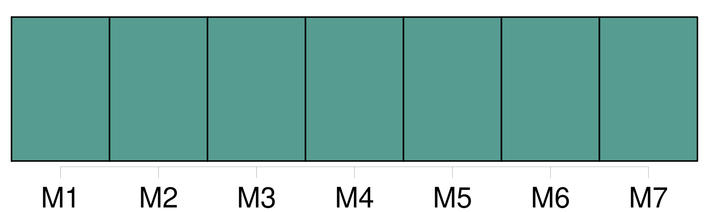
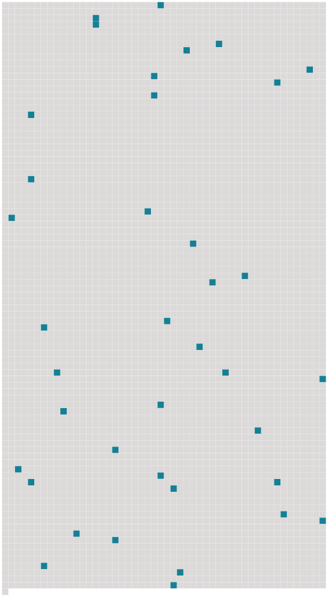

Longueur nb maillons : 38 mentions |
 |
Si, lors du décès du mari, la femme est enceinte, il sera nommé un curateur au ventre par le conseil de [famille] [4 phrases]
Si la mère tutrice veut se remarier, elle devra, avant l'acte de mariage, convoquer le conseil de [famille] qui décidera si la tutelle doit lui être conservée. [1 phrases]
396 [7 phrases]
Lorsque la mère remariée, et maintenue dans la tutelle, aura fait choix d'un tuteur aux enfans de son premier mariage, ce choix ne sera valable qu'autant qu'il sera confirmé par le conseil de [famille] [1 phrases]
Le tuteur élu par le père ou la mère, n'est pas tenu d'accepter la tutelle, s'il n'est d'ailleurs dans la classe des personnes qu'à défaut de cette élection spéciale le conseil de [famille] eût pu en charger. [7 phrases]
Si la même concurrence a lieu entre deux bisaïeuls de la ligne maternelle, la nomination sera faite par le conseil de [famille] , qui ne pourra néanmoins que choisir l'un de ces deux ascendans. [1 phrases]
De la Tutelle déférée par le Conseil de [famille] [1 phrases]
Lorsqu'un enfant mineur et non émancipé restera sans père ni mère, ni tuteur élu par ses père ou mère, ni ascendans mâles, comme aussi lorsque le tuteur de l'une des qualités ci-dessus exprimées se trouvera ou dans le cas des exclusions dont il sera parlé ci-après, ou valablement excusé, il sera pourvu, par un conseil de [famille] à la nomination d'un tuteur. [4 phrases]
Le conseil de [famille] sera composé, non compris le juge de paix, de six parens ou alliés, pris tant dans la commune où la tutelle sera ouverte que dans la distance de deux myriamètres, moitié du côté paternel, moitié du côté maternel, et en suivant l'ordre de proximité dans chaque ligne. [3 phrases]
S'ils sont six, ou au-delà, ils seront tous membres du conseil de [famille] , qu'ils composeront seuls, avec les veuves d'ascendans et les ascendans valablement excusés, s'il y en a. [19 phrases]
Le conseil de [famille] sera présidé par le juge de paix, qui y aura voix délibérative et prépondérante en cas de partage. [14 phrases]
Lorsque les fonctions du tuteur seront dévolues à une personne de l'une des qualités exprimées aux sections I, II et III du présent chapitre, ce tuteur devra, avant d'entrer en fonctions, faire convoquer, pour la nomination du subrogé tuteur un conseil de [famille] composé comme il est dit en la section IV.
S'il s'est ingéré dans la gestion avant d'avoir rempli cette formalité, le conseil de [famille] , convoqué soit sur la réquisition des parens, créanciers ou autres parties intéressées, soit d'office par le juge de paix, pourra, s'il y a eu dol de la part du tuteur, lui retirer la tutelle, sans préjudice des indemnités dues au mineur. [10 phrases]
Néanmoins le tuteur ne pourra provoquer la destitution du subrogé tuteur, ni voter dans les conseils de [famille] qui seront convoqués pour cet objet. [11 phrases]
Ceux, au contraire, à qui lesdites fonctions, services ou missions, auront été conférés postérieurement à l'acceptation et gestion d'une tutelle, pourront, s'ils ne veulent la conserver, faire convoquer, dans le mois, un conseil de [famille] pour y être procédé leur remplacement.
Si, à l'expiration de ces fonctions, services ou missions, le nouveau tuteur réclame sa décharge, ou que l'ancien redemande la tutelle, elle pourra lui être rendue par le conseil de [famille] [18 phrases]
Si le tuteur nommé est présent à la délibération qui lui défère la tutelle il devra sur-le-champ et sous peine d'être déclaré non recevable dans toute réclamation ultérieure proposer ses excuses, sur lesquelles le conseil de [famille] délibérera. [1 phrases]
Si le tuteur nommé n'a pas assisté à la délibération qui lui a déféré la tutelle, il pourra faire convoquer le conseil de [famille] pour délibérer sur ses excuses. [9 phrases]
Ne peuvent être tuteurs, ni membres des conseils de [famille] , [12 phrases]
Tout individu qui aura été exclu ou destitué d'une tutelle, ne pourra être membre d'un conseil de [famille] [1 phrases]
Toutes les fois qu'il y aura lieu à une destitution de tuteur, elle sera prononcée par le conseil de [famille] , convoqué à la diligence du subrogé tuteur ou d'office par le juge de paix. [2 phrases]
Toute délibération du conseil de [famille] qui prononcera l'exclusion ou la destitution du tuteur, sera motivée, et ne pourra être, prise qu'après avoir entendu ou appelé le tuteur. [10 phrases] Il administrera ses biens en bon père de [famille] , et répondra des dommages-intérêts qui pourraient résulter d'une mauvaise gestion.
Il ne peut ni acheter les biens du mineur, ni les prendre à ferme à moins que le conseil de [famille] n'ait autorisé le subrogé tuteur à lui en passer bail ni accepter la cession d'aucun droit ou créance contre son pupille. [4 phrases]
Dans le mois qui suivra la clôture de l'inventaire, le tuteur fera vendre, en présence du subrogé tuteur, aux enchères reçues par un officier public et après des affiches ou publications dont le procès-verbal de vente fera mention, tous les meubles autres que ceux que le conseil de [famille] l'aurait autorisé à conserver en nature. [5 phrases]
Lors de l'entrée en exercice de toute tutelle, autre que celle des père et mère le conseil de [famille] réglera par aperçu, et selon l'importance des biens régis, la somme à laquelle pourra s'élever la dépense annuelle du mineur, ainsi que celle d'administration de ses biens. [4 phrases]
Si le tuteur n'a pas fait déterminer par le conseil de [famille] la somme à laquelle doit commencer l'emploi, il devra, après le délai exprimé dans l'article précédent, les intérêts de toute somme non employée, quelque modique qu'elle soit. [1 phrases] Le tuteur, même le père ou la mère, ne peut emprunter pour le mineur, ni aliéner ou hypothéquer ses biens immeubles, sans y être autorisé par un conseil de [famille] [1 phrases]
Dans le premier cas, le conseil de [famille] n'accordera son autorisation qu'après qu'il aura été constaté, par un compte sommaire présenté par le tuteur, que les deniers, effets mobiliers et revenus du mineur sont insuffisans.
Le conseil de [famille] indiquera, dans tous les cas, les immeubles qui devront être vendus de préférence, et toutes les conditions qu'il jugera utiles. [1 phrases]
Les délibérations du conseil de [famille] relatives à cet objet, ne seront exécutées qu'après que le tuteur en aura demandé et obtenu l'homologation devant le tribunal civil de première instance, qui y statuera en la chambre du conseil, et après avoir entendu le commissaire du Gouvernement. [7 phrases] Le tuteur ne pourra accepter ni répudier une succession échue au mineur, sans une autorisation préalable du conseil de [famille] [2 phrases]
Dans le cas où la succession répudiée au nom du mineur n'aurait pas été acceptée par un autre, elle pourra être reprise soit par le tuteur, autorisé à cet effet par une nouvelle délibération du conseil de [famille] , soit par le mineur devenu majeur, mais dans l'état où elle se trouvera lors de la reprise, et sans pouvoir attaquer les ventes et autres actes qui auraient été légalement faits durant la vacance. [1 phrases]
La donation faite au mineur ne pourra être acceptée par le tuteur qu'avec l'autorisation du conseil de [famille] [2 phrases]
Aucun tuteur ne pourra introduire en justice une action relative aux droits immobiliers du mineur, ni acquiescer à une demande relative aux mêmes droits, sans l'autorisation du conseil de [famille] [7 phrases]
Le tuteur ne pourra transiger au nom du mineurs qu'après y avoir été autorisé par le conseil de [famille] , et de l'avis de trois jurisconsultes désignés par le commissaire du Gouvernement près le tribunal civil. [2 phrases]
Le tuteur qui aura des sujets de mécontentement graves sur la conduite du mineur, pourra porter ses plaintes à un conseil de [famille] et, s'il y est autorisé par ce conseil, provoquer la réclusion du mineur, conformément à ce qui est statué à ce sujet au titre de la Puissance paternelle. [5 phrases]
Tout tuteur, autre que le père et la mère, peut être tenu, même durant la tutelle, de remettre au subrogé tuteur des états de situation de sa gestion, aux époques que le conseil de [famille] aurait jugé à propos de fixer, sans néanmoins que le tuteur puisse être astreint à en fournir plus d'un chaque année. |
 |
Il est possible de télécharger la ressource sur la page Ortolang |
Si vous avez des questions ou vous voyez des erreurs, merci d'envoyer un mail à silvia.federzoni89@gmail.com |